- Title
- アンラベル・トリガーUnravel trigger
- Aliases
- アントリ, Antori
- Developer / Publisher
- Archive
- Release year
- 2024
- Language(s)
- 🇯🇵
- Playtime
- Long (30-50h)
- Age Ratings
- 18+
Sinopsis
Pecahnya peperangan antara Federasi Kaarg dan Kekaisaran Vilcar akhirnya memasuki titik jenuh sehingga terjadilah gencatan senjata melalui cara diplomatis, Teritori Kaarg yang masuk zona peperangan diperebutkan oleh kedua belah pihak sampai akhirnya Republik Ymir turun tangan sebagai penengah. Wilayah tersebut pun menjadi Zona Buffer atau Zona Netral Perang dibawah regulasi Republik Ymir
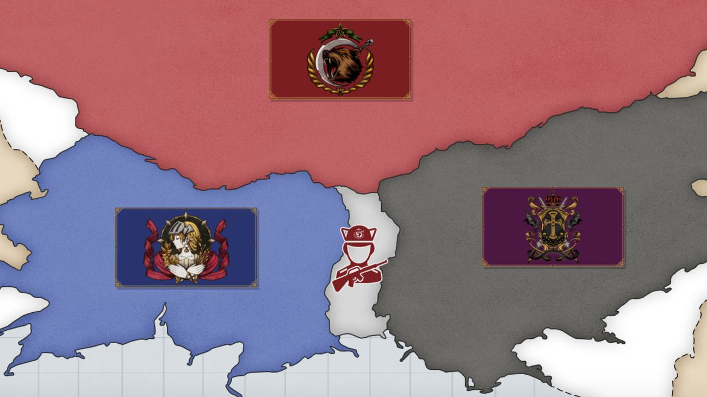
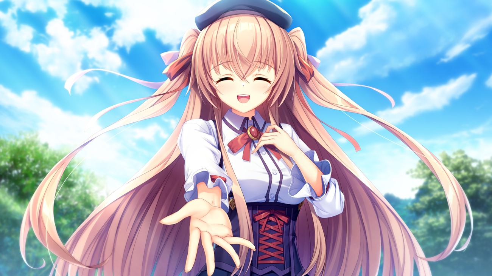
Peperangan seperti pada umumnya merenggut banyak hal berharga, termasuk Yuzuriha Saina, Osananajimi dari protagonis kita, Sakaki Kai. Cerita berpusat pada Kai yang mencari teman dekatnya itu setelah mendapat info bahwa dia sebenernya belum mati dan berada di wilayah sekitar Zona Netral. Kai juga menggarap sebagai detektif untuk menghidupi kebutuhannya sekaligus memudahkannya melacak keberadaan Saina
Latar Rawan Konflik
Unravel Trigger memiliki pondasi konflik aftermath dari perang dan perbedaan sudut pandang antar ras. Terdapat 3 kekuatan besar dalam alur VN ini, yang pertama ada Federasi Kaarg dihuni oleh ras Hyume (Manusia), kemudian Kekaisaran Vilcar, teritori dari ras Vamp (Vampir) berdarah murni, dan terakhir ada wilayah ras Anima (Half-Beast) yaitu Republik Ymir. Frost Neutral Territory, yang menjadi panggung utama cerita VN ini merupakan Zona Buffer sekaligus tempat perhunian ketiga ras tadi, nah dari sini bisa dibayangin apa jadinya jika dua musuh perang yang masih anget bermukim di tempat yang sama?
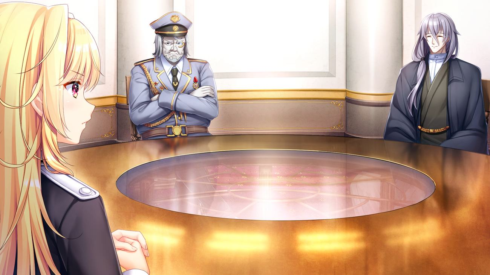
Perang adalah sebuah akar dari rantai kebencian, patriotisme dan rasa sakit ditinggalkan orang terdekat merupakan bubuk mesiu yang paling efektif, massa serta media ibarat kerangka penopang, dan pemerintahlah yang punya kontrol terhadap pelatuk. Gerakan separatis, terorisme, grup2 radikal, upaya untuk membalaskan dendam orang2 terkasih menggumpal di Frost Neutral Territory, belum lagi diktatorat dan rasisme yang menjadi pemandangan sehari2 membuat latar VN ini seolah olah bom yang bisa meledak kapanpun
Demokrat, Komunis, dan Nazi
Salah satu poin yang sangat menarik dari VN ini adalah bagaimana 3 Kekuatan besar disini punya korelasi serta inspirasi dari dunia nyata, Federasi Kaarg, merepresentasikan satu negara demokrasi pada umumnya, bisa diumpamakan sebagai contohnya United States, Republik Ymir digambar dengan pondasi Soviet Union yang pekat dengan komunisme, dan yang paling menarik yaitu Kekaisaran Vilcar, diilustrasikan sebagai Jerman pada masa Third Reich, yang artinya negara ini menganut ideologi2 Nazi seperti propaganda ras superior, genosida, rasisme, dan lainnya
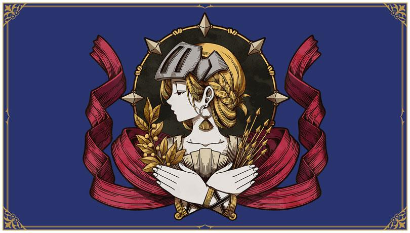
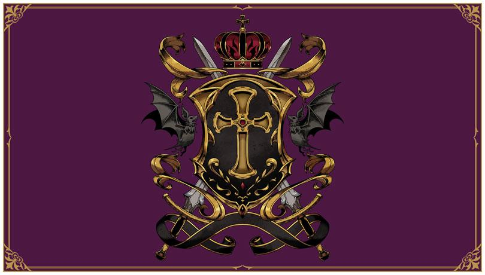
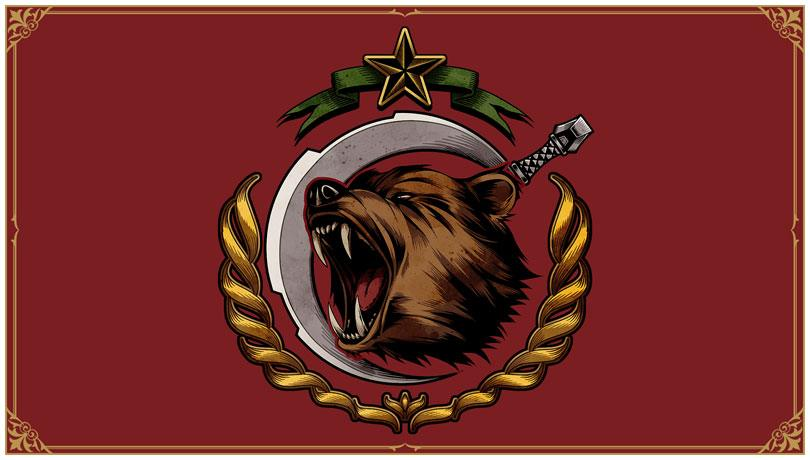
Gak cumen ideologi, ras disini pun juga punya keunggulannya masing2, hyume (Manusia) unggul dalam teknologi dan terobosan sains, beberapa diantaranya juga memegang gelar Legacy, mereka adalah manusia terpilih dengan rasio 1/10.000 yang memiliki berkat kekuatan alami, contohnya protagonis kita, Kai yang memiliki kemampuan psikokinesis, yang jika digabungkan dengan kecerdikan serta kemahirannya bermain senjata api menjadikannya unggul dalam banyak pertempuran.
Disisi lain, Anima (Half-Beast) merupakan ras yang diberkahi kemampuan fisik luar biasa, membuatnya selalu unggul dalam hal raw power, namun bukan berarti ras yang satu ini lemah dalam permainan otak. Sophia Noscova, cewek ras Anima yang mempunyai wewenang tertinggi sebagai badan intelejensi di Frost Neutral Territory pandai dalam menyusun rencana sehingga bisa membuat musuh external maupun internal, politik maupun militer gk mau main main dengannya.

Terakhir ada ras Vamp (Vampire) yang memiliki tubuh abadi, mereka tidak bisa dibunuh kecuali jika dipenggal atau kepalanya hancur (dan umur), mereka juga memiliki bakat alamiah untuk mengendalikan darah selayaknya senjata. Henrietta Von Willraven, salah satu Ojousama dari ras ini dapat membuat peluru dari segumpal darah serta melontarkannya tanpa bantuan apapun, ibarat sebuah Machine Gun tanpa wujud yg dapat beraksi kapanpun. Ras Vamp layaknya makhluk vampire doyan menghisap darah ras lain. Atribut2 semacam itulah yang membuat ras ini punya harga diri yang tinggi serta beranggapan merekalah sang apex predator yang sepantasnya berada diatas ras2 lain
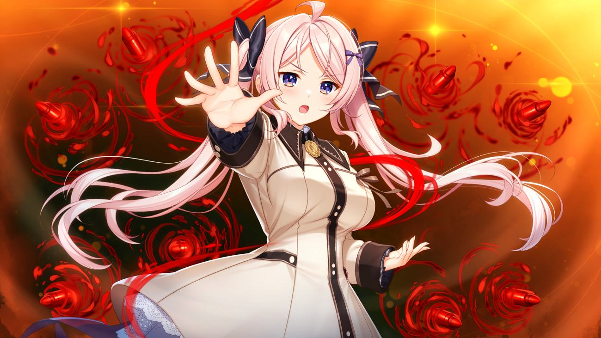
Heroine dan Ideologi Politiknya
Main Heroine disini juga disejajarkan dengan 3 faksi utama dalam cerita, mengeksplorasi masing2 ideologi politik pada domisili asalnya sehingga menjadikan tiap route nya khas dan menjamin reading experience yang berwarna.
Pertama dari faksi manusia yaitu Kohanai Reiri, Heroine dengan troupe utama Joushi Koukousei yang posesif dan gk mau ngalah. Route Reiri bisa dibilang Route paling “damai” karena temanya yang berhubungan dengan sistem politik demokrasi, dengan bumbu tindakan ekstrim dari pihak radikal yang membuat route ini punya keseruannya sendiri.

Route Heroine dari ras Anima adalah Sophia Noscova, Jendral Badan Intelejensi republik Ymir berwilayah di zona netral. Sebagai petinggi suatu institusi yang identik dengan spionase, Sophia punya kemampuan nalar yang tinggi dan selalu mengutamakan logika diatas perasaan, penampilan serta gerak gerik nya sebatas topeng untuk mengelabui lawan dan kawan, segalanya dikorbankan demi memenuhi ambisinya. Konflik dalam route Sophia menyangkut pada tanah air nya yang belum lama terjadi Revolusi, mengubah sistem pemerintahan dari Monarki menjadi Komunis sehingga banyak menyentuh hal2 terkait ide kesetaraan dan diktatorat.
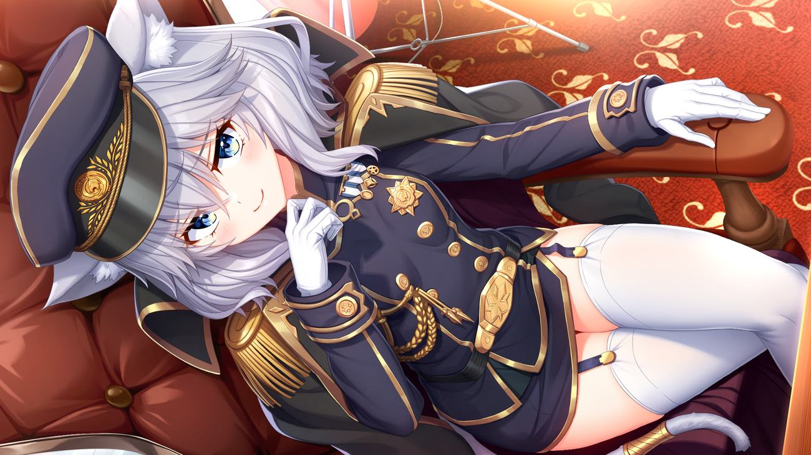
Dan yang terakhir, Hidangan Utama serta Grand Route dari Unravel Trigger, Route putri kerajaan ras Vamp, Millicent Fried Leonhard
Putri Millicent, Titik Balik Arogansi Aryan
Salah satu hal yang pertama kali terlintas di pikiran gw di route ini adalah Bagaimana caranya Problem Solving bagi suatu kaum yang berambisi akan dominasi total atas kaum lainnya?, tentu jawabannya mudah jika kamu adalah pihak luar atau pengamat namun bagaimana jika kamu seorang pewaris tahta tertinggi dari kaum tersebut?. Millicent Fried Leonhard atau akrab dipanggil Mili adalah pribadi yang idealis, ambisius, dan juga seorang Philantrophist!.
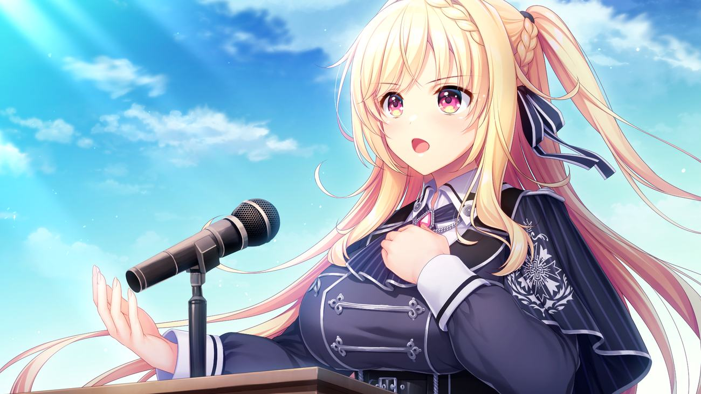
Idealisme yang tinggi akan perdamaian antar ras dan bangsa merupakan pondasi utama dirinya menjadi Ambassador di Frost Neutral Territory, Mili terus menyuarakan idealismenya di hadapan publik serta menjalin hubungan diplomasi antar negara untuk menjaga status quo, mencegah perang lanjutan, dan akhirnya menciptakan dunia bebas konflik kedepannya.
Tentu kenyataannya gak semudah itu, rantai kebencian akibat peperangan tidak mudah diputus, begitu juga pola pikir hasil dari glorifikasi selama ratusan tahun. Mili sebagai penyokong perdamaian adalah ancaman di mata berbagai pihak, terlebih lagi Mili adalah seorang pasifis, tipe2 orang yang kalau ditanya mengenai Trolley Problem bakal jawab akan menyelematkan semuanya dan tidak ada yang dikorbankan. Sikap positif serta baik hati merupakan kekuatan sekaligus kelemahannya, dan hal ini dieksekusi dengan baik di Route-nya, menjadikan Route Heroine yang paling impresif dan paling seru menurut gw pribadi
Sub-Heroine dan Extra Story
Unravel Trigger juga memiliki hidangan penutup berupa IF route para ajudan Main Heroine dan After Story tiap heroine. Seperti After Story pada umumnya, chapter2 ini tidak memiliki jalan cerita, hanya menyuguhkan momen para Heroine sampingan yang gak kebagian porsi di cerita utama
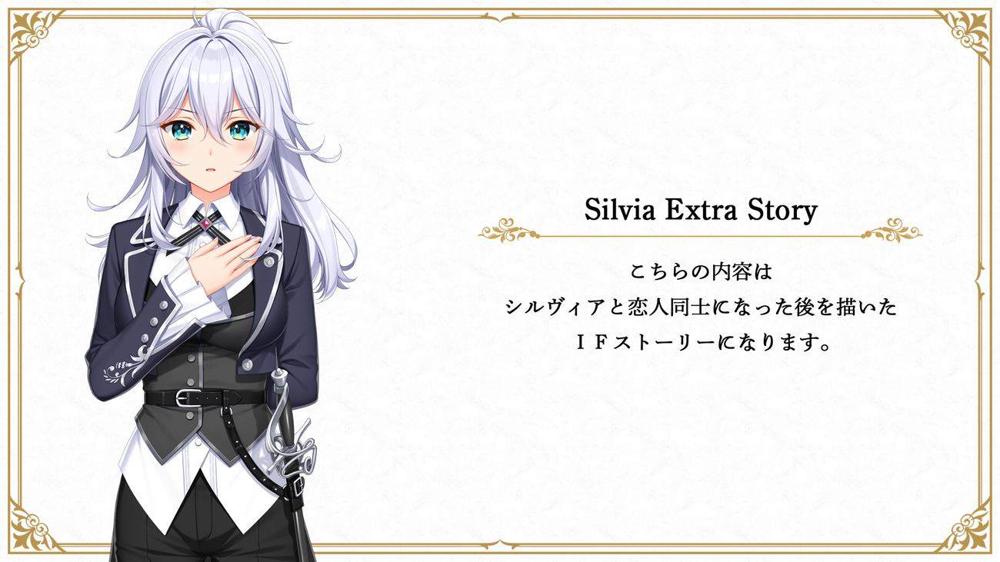
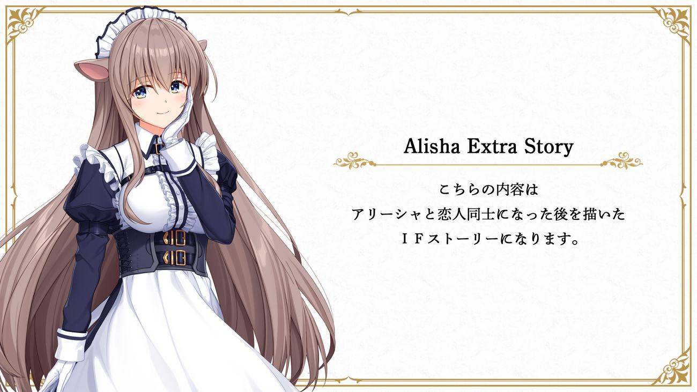
Unravel Trigger memiliki konsep yang unik, konflik yang merefleksikan realita memberikan bobot pada cerita dan pengalaman membaca yang impresif ditambah bumbu2 moege yang pada kadarnya. Sayangnya gw pribadi kurang puas dengan action scene nya dan juga karakter utama yang awalnya gw ekspektasikan bakal ikonik mirip Ruka dari Ryuusei World Actor. VN ini cocok jika kamu mencari story yang menarik diiringi konflik yang kritis dengan length yg gak begitu panjang
© Archive · NEXTON